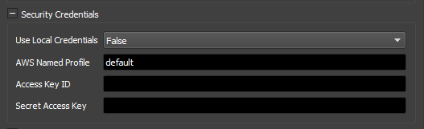

Spot Event Plugin - Security Credentials¶
Overview¶
The Spot Event Plugin makes requests to start and modify Spot Fleets. It requires authorization and permissions to perform these operations in AWS.
Ways To Supply IAM Credentials¶
You must create and supply IAM Credentials to the Spot Event Plugin in one of the following ways:
AWS Named Profile¶
AWS Named Profiles are collections of settings and credentials that are stored on a machine.
In order to use a Named Profile in the Spot Event Plugin, you need to set Use Local Credentials to True, and set the AWS Named Profile setting to the name of your profile.
See also
For more information on AWS Named Profiles and how to create them, visit: https://docs.aws.amazon.com/cli/latest/userguide/cli-configure-profiles.html
Note
The credential and config files (
~/.aws/credentialsand~/.aws/config(Linux & Mac) or%USERPROFILE%\.aws\credentialsand%USERPROFILE%\.aws\config(Windows)) must be on the machine that performs house cleaning (which is usually the machine running RCS or Pulse).
Access Key and Secret Access Key¶
The Access Key and Secret Access Key for the IAM User can be directly entered into the Spot Event Plugin’s dialog.
In order to use the Access Key and Secret Key you need to set Use Local Credentials to False and set both the Access Key ID and Secret Access Key fields.
See also
For more information on Access and Secret Keys visit: https://docs.aws.amazon.com/general/latest/gr/aws-sec-cred-types.html#access-keys-and-secret-access-keys
Default Credentials¶
If neither Access Key and Secret Key nor the AWS Named Profile are configured, the systems Default credentials will be used.
If your RCS or Pulse is running on an EC2 instance, this mode can be used to work with the EC2 Instance Role attached to that instance.
See also
For more information on the default credential search path visit: https://boto3.amazonaws.com/v1/documentation/api/latest/guide/credentials.html#configuring-credentials